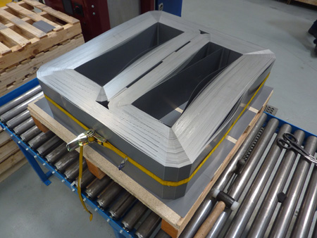
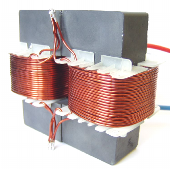

class: center, middle # EE-568 Selected Topics in Electrical Machines ## Ozan Keysan [keysan.me](http://keysan.me) Office: C-113 <span class="meta">•</span> Tel: 210 7586 --- # Inductor Design -- ## Can be used in power electronics <img src="http://www.coilws.com/images/Inductors%20Group.jpg" alt="Drawing" style="width: 600px;"> --- # Inductor Design ## Can be used in line-current filtering <img src="https://kebamerica.com/wp-content/uploads/2020/02/Elevator-Harmonics-Filter-1024x607.png" alt="Drawing" style="width: 700px;"> --- # Inductor Design ## Can be used in grid level: Reactors <img src="https://studyelectrical.com/wp-content/uploads/2024/09/Basic-components-of-gapped-core-shunt-reactors-active-part-1.webp" alt="Drawing" style="width: 700px;"> --- ## [Shunt Reactors](http://electrical-engineering-portal.com/differences-between-shunt-reactor-and-power-transformer) ### [Gapped Core](https://www.hitachienergy.com/products-and-solutions/transformers/reactors-and-inductors/shunt-reactors) <img src="https://5.imimg.com/data5/VB/AW/GI/GLADMIN-12204805/selection-080-500x500.png" alt="Drawing" style="width:800px;"> --- ## [Same Idea](https://www.enpay.com/en/products/magnetic-cores/shunt-reactor-cores) with a Gapped E-Core <img src="https://meettechniek.info/compendium/magn-images/air-gap.jpg" alt="Drawing" style="width:800px;"> --- # Real Inductors/Transformers Have: -- - ## Losses -- (Copper and Core) -- - ## Leakage flux -- - ## Magnetizing current -- - ## Hysteresis --- # Realistic Equivalent Circuit of a Transformer ## = Ideal Transformer + External Impedances -- <img src="./images/Transformer_equivalent_circuit.svg" alt="Drawing" style="width:800px;"> --- # Winding Resistances: (\\(R_1, R_2\\)) or (\\(R_p, R_s\\)) - ## Resistance of the copper [Winding machine](http://www.youtube.com/watch?v=I_kJCLWwI2Y), [Winding for large transformers](http://youtu.be/yYFm3vxOVgw?t=24s) -- - ### Question: In a step-down transformer which one is larger? ### \\(R_1\\) or \\(R_2\\)? -- - ## Copper Losses: \\(I^2 R \\) -- [Overloaded Transformer](https://www.youtube.com/watch?v=yldWvMXsD00), [Transformer Fails](https://www.youtube.com/watch?v=D8EQPx-ptKk) --- # Leakage Flux -- ## Leakage Reactance: \\( X_{leakage} \\)  - ## Leakage through Air (Linear B-H, no hysteresis) --- # How to minimize leakage flux? -- <img src="http://www.ikes.16mb.com/pict/transformer/x_sect_s.jpg" alt="Drawing" style="width: 500px;"/> - ## Where is the secondary winding? --- # How to minimize leakage flux? <img src="http://sub.allaboutcircuits.com/images/52012.jpg" alt="Drawing" style="width: 400px;"/> --- # Magnetizing Flux -- ## A term represents the necessary flux in the core. ##Magnetizing Reactance: \\( X_{m} \\)  --- # Core Losses - ## Hysteresis Loss (\\(\propto\\) Frequency) - ## Eddy Current Loss (\\(\propto\\) Frequency\\(^2\\)) <img src="http://www.coolmagnetman.com/images/hysteresis.png" alt="Drawing" style="width: 400px;"/> <img src="https://cdn2.magcraft.com/images/content/eddy-current-braking.png" alt="Drawing" style="width: 300px;"/> --- # Transformer Design -- ### A few handouts available in ODTUClass --- # Core Design -- ## [Core Manufacturing](https://www.youtube.com/watch?v=FXcBKxAc4_k)  --- # Core Design ## Shell Type -- <img src="./images/ee564/shell_type.png" alt="Drawing" style="width: 600px;"/> --- # Core Design -- ## Core Type -- <img src="./images/ee564/core_type.png" alt="Drawing" style="width: 600px;"/> --- # Core Design ## 3P-Core Type -- <img src="./images/ee564/3p_core_type.png" alt="Drawing" style="width: 600px;"/> --- # Core Design ## 5P-Core Type -- <img src="./images/ee564/3p_core_type.png" alt="Drawing" style="width: 600px;"/> --- # Transformer Winding  ### [Transformer Winding Process](https://www.youtube.com/watch?v=yYFm3vxOVgw) --- # Temperature Effect ### How does the resistance change with time? -- ## Temperature Coefficient ## $$R(T) = R(T_0)(1 + \alpha\Delta T)$$ -- ### For copper (at 20 C): \\( \alpha = 0.003862\;K^{-1} \\) [Ref1](http://hyperphysics.phy-astr.gsu.edu/hbase/tables/rstiv.html), [Ref2](http://en.wikipedia.org/wiki/Electrical_resistivity_and_conductivity) -- ## Resistivity of copper increases by 30% from 20C to 100C. --- # Conductor Standard Sizes -- ## - American Wire Gauge (AWG) -- ## - National Electrical Manufacturers Association (NEMA) -- ## - International Electrotechnical Commission (IEC) --- # Conductor Standard Sizes - ### [AWG](http://en.wikipedia.org/wiki/American_wire_gauge) - ### [AWG Sizes](http://www.engineersedge.com/copper_wire.htm) - ### [AWG Size Table](https://www.solaris-shop.com/american-wire-gauge-conductor-size-table/) - ### [Magnet Wire Types](http://mwswire.com/magnet-wire/) - ### [MWS Catalogue](http://www.mwswire.com/pdf_files/mws_tech_book/TechBook040114.pdf) - ### [Sarkuysan Enamelli Bakır Tel](https://www.sarkuysan.com/dosya/katalog/katalog-254202358192.pdf) - ### [Current Ratings](https://www.engineeringtoolbox.com/wire-gauges-d_419.html) --- # Transformer Design Exercise -- - ## Design a Transformer with the following specifications: -- - ## 1 MVA, Single Phase -- - ## 34.5 kV, 400V Single Phase -- - ## 50 Hz -- - ## Ambient Temp: -30, 50 C. Cooling: ONAN --- # Design Steps -- - ### Choose Core Material -- - ### Choose Operating Flux Density -- - ### Determine Core Dimensions & Number of Turns -- - ### Determine Core Losses, Copper Losses and Equivalent Circuit Parameters -- - ### Determine operating temp. -- - ### Determine mass, cost etc. --- # Useful Links - [Ericsson, Book, Ch13 Sliders](https://picture.iczhiku.com/resource/eetop/SyISfIGsIzskUMBx.pdf) - [Ericsson, Book, Ch15 Sliders](https://picture.iczhiku.com/resource/eetop/SyISfIGsIzskUMBx.pdf) - [Power Transformer Design](http://www.cs.toronto.edu/~relu/audio/docs/pwrtransformerdesign.pdf) - [TI Design of Power Transformers](https://www.ti.com/lit/ml/slup126/slup126.pdf) - [Conventional Transformer Design](http://link.springer.com/chapter/10.1007/978-1-84882-667-0_2) - [Transformer Design](https://static.assets-stash.eet-china.com/original/3X/a/0/a0e74ad85b55b935dbb68e1c23e578818998187f.pdf) - [Leakage Flux Calculation](https://www.ams-publications.ee.ethz.ch/uploads/tx_ethpublications/06_Integration_Leakage_CIPS2012_01.pdf), page 4 --- ## You can download this presentation from: [keysan.me/ee564](http://keysan.me/ee564)